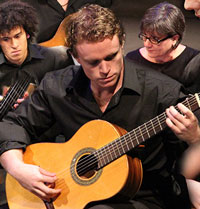

Are you new to Townsville?
General information about Townsville is available at -
http://www.townsville.qld.gov.au/townsville/infocentre/Pages/default.aspx
Townsville has a population of about 200,000 and is growing at about 1 suburb per year, so there is a lot of musical activity. All private schools and most government schools have music teachers. The larger private schools are Townsville Grammar, the Cathedral School and Ryan Catholic College. The larger public high schools are Kirwan and Pimlico.
Music Teachers Association of Qld is a good source of information for local music teachers.
The Townsville Branch contact is the Secretary (Ms Margery Jorgensen)
Phone (07) 47790382
Email: mjo11750@bigpond.net.au
Another active teachers’ organisation is the Kodaly Music Education Institute of Australia -
www.kodaly.org.au/
Information on their Townsville Chapter can be found at -
http://webapps.townsville.qld.gov.au/CommunityDirectory/Organisation/OrganisationDetails/1185
Some local businesses also employ or assist music teachers. Try these -
heather@thekeyboardshop.com.au
and www.artiesmusiconline.com.au/
Busking is permitted at several public spaces around the city with a Buskers Permit from the city council - phone 4727 9680.
There is no age limit, but buskers 16 and under will need to be accompanied by a parent/guardian.